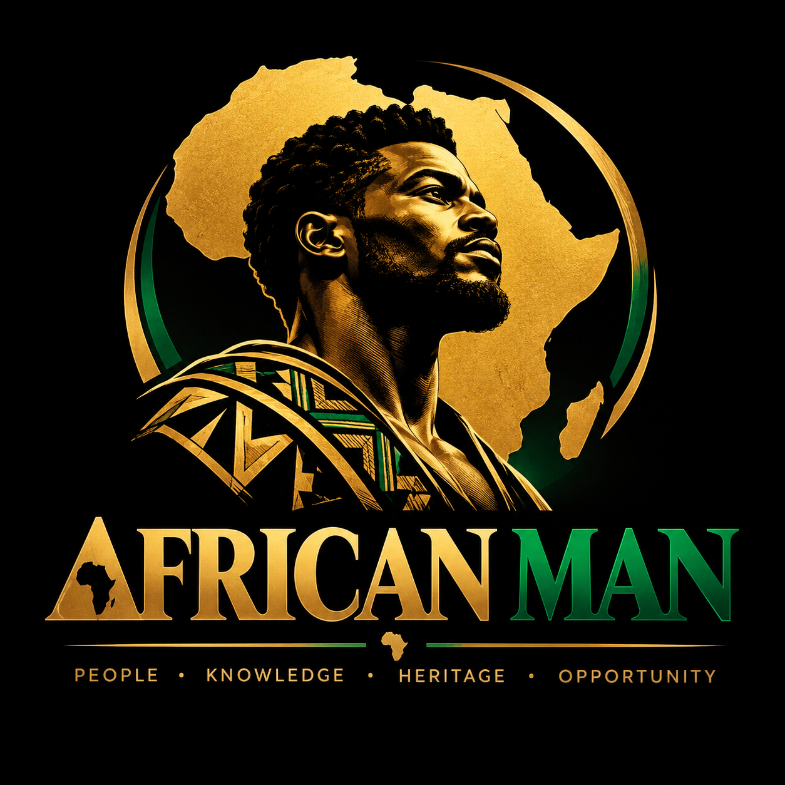

Identity · Knowledge · Progress
Rooted in Africa.
Connected to the world.
A modern Pan-African technology hub connecting intelligence, history, innovation and community. Explore the platforms building a more connected African future.
The ecosystem
Explore our platforms
Discover independent projects and services. Each link opens its own platform; sign in there where available.
AfrOsint
Explore African geopolitics, news, mapping and open-source intelligence.
Open platform ↗ African historyAfrican Revolutionary Timeline
Explore African resistance, liberation, sovereignty and historical movements through an interactive archive.
Visit website ↗ BusinessScanMenu
Digital tools for modern African hospitality and businesses.
Visit website ↗ CommunityWALE
A digital space for African connections and community.
Visit website ↗ DiscoveryMelaninMaps
Discover African places, connections and the wider diaspora.
Visit website ↗Our purpose
One continent. Many voices. Shared progress.
AfricanMan.org is a modern Pan-African technology hub connecting independent digital projects in intelligence, history, discovery and enterprise. This is a starting point — more platforms will join as the ecosystem grows.